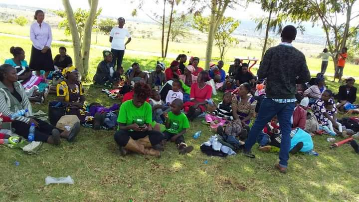

1 / 3

Caption Text
2 / 3

Caption Two
3 / 3

Caption Three
Donations is not all about money, but time also. Being part of the program will be a major boost not only to us but also to the affected just by spending time with them.
Jackline Makau
+254 704 488 014
kasyokamakau@gmail.com